A dashboard for your homelab. An agent on each Linux host reports containers, disks, ZFS, Proxmox, ports and packages every 15 minutes.
The dashboard below runs on an example fleet of six hosts.
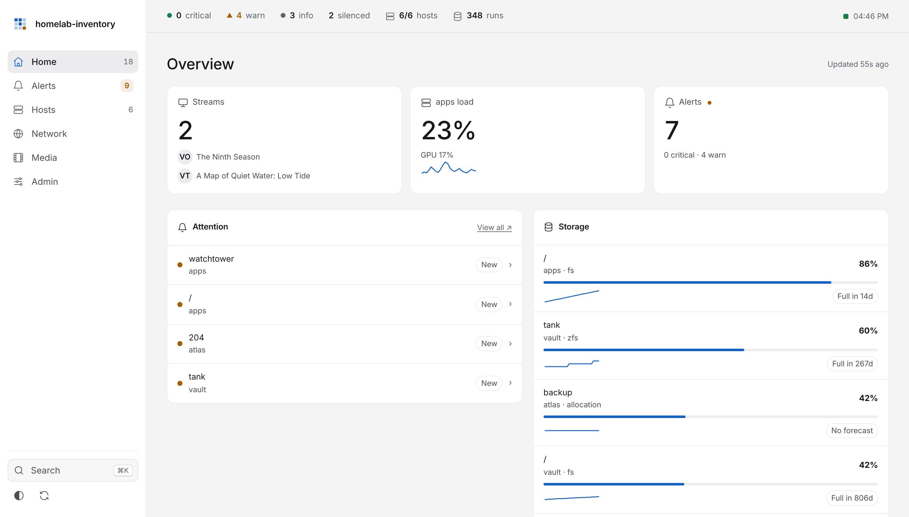
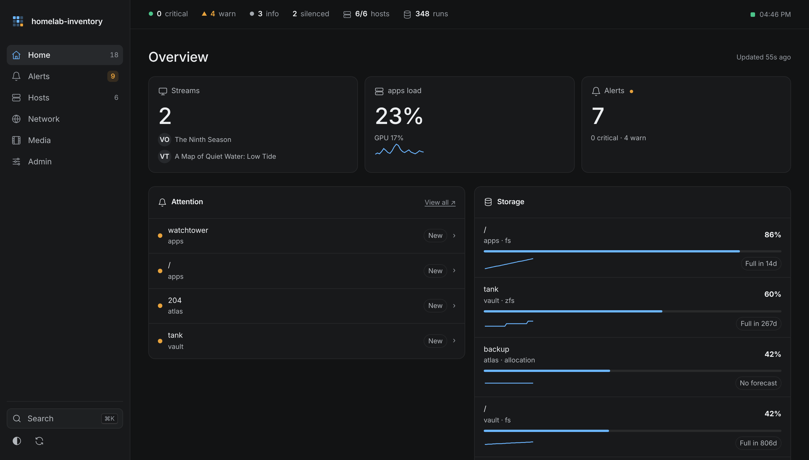
This is the dashboard's search, over an example fleet of six hosts. Type a service, port, host or alert.
When each filesystem, ZFS pool and Proxmox storage will be full, from the last 14 days of reports.
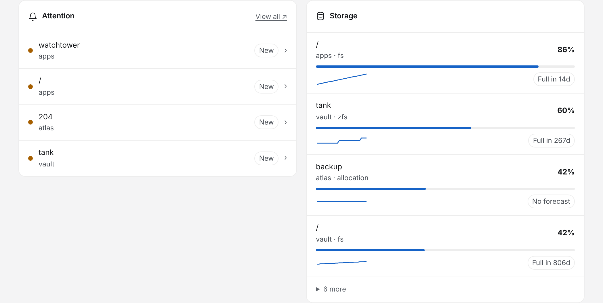
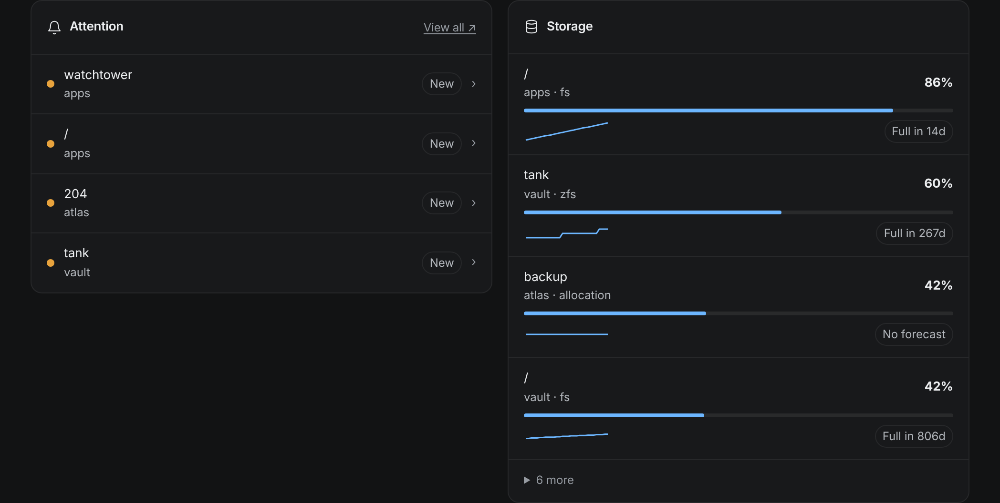
Full disks, failed units, unhealthy containers, ZFS scrubs and backups. Apprise notifies you when one starts or clears.
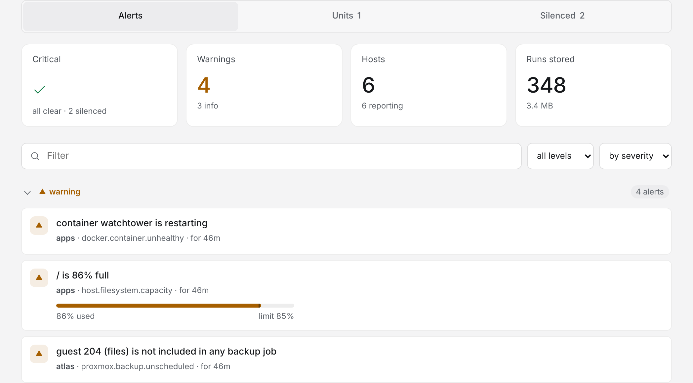
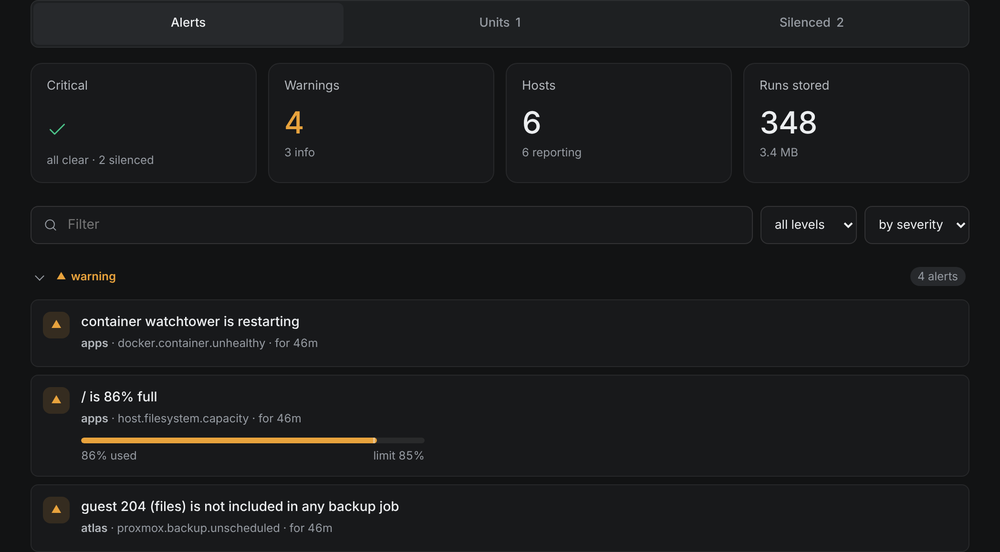
A tile for every web service it finds listening on your hosts, with its icon and address.
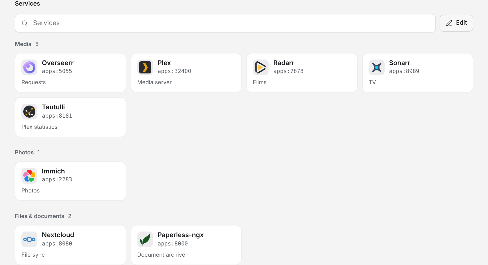
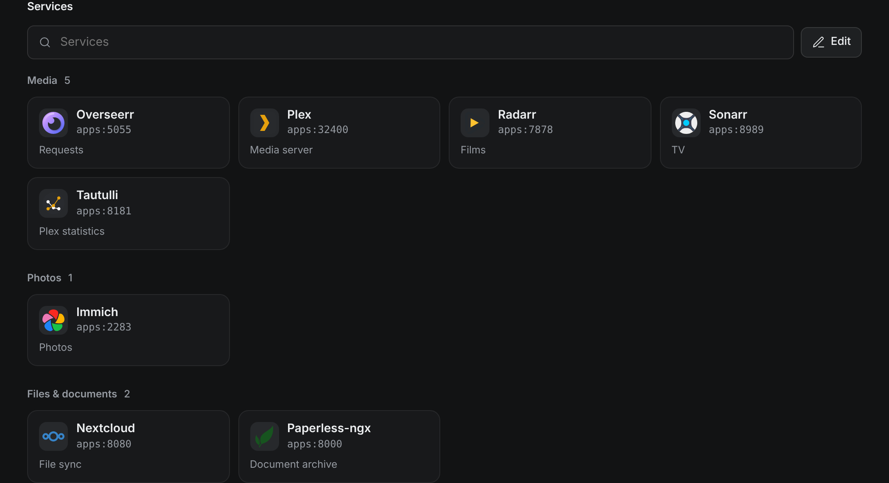
One page per host, one section for each thing it reports: alerts, facts, storage, containers, stacks, the port map, images, packages, what changed and compose files.
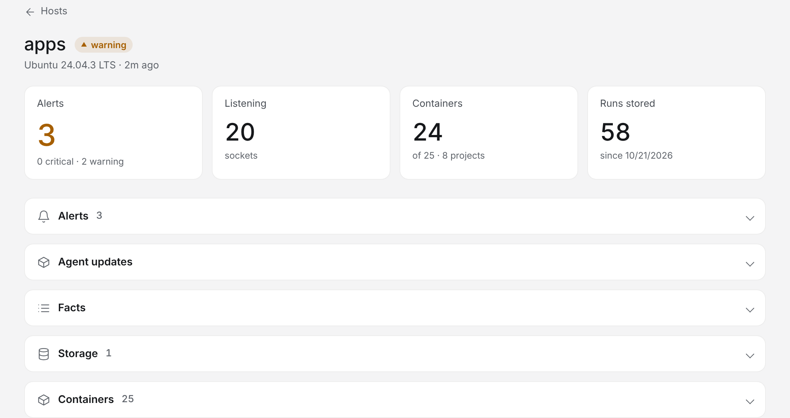
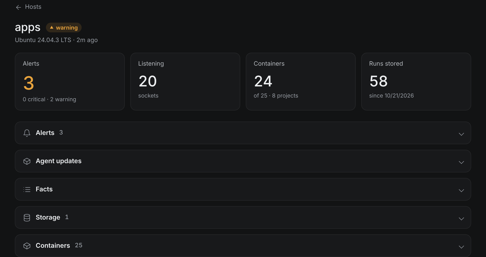
Optional, per host. Canary hosts try a signed release first. A host whose trial fails keeps its last good agent.
Media, network, uploads, Cloudflare and more. Each one stays off until you turn it on.
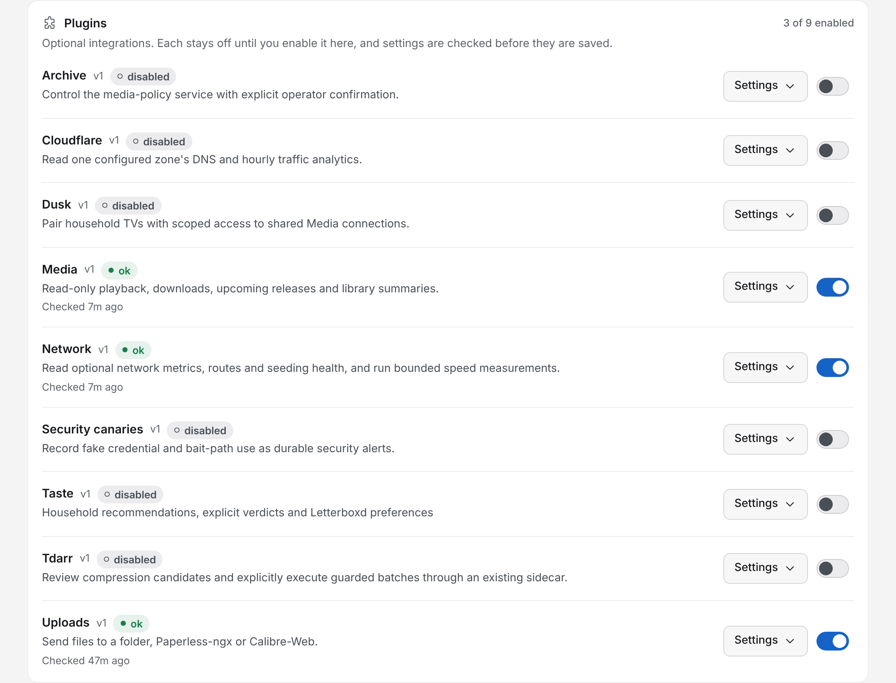
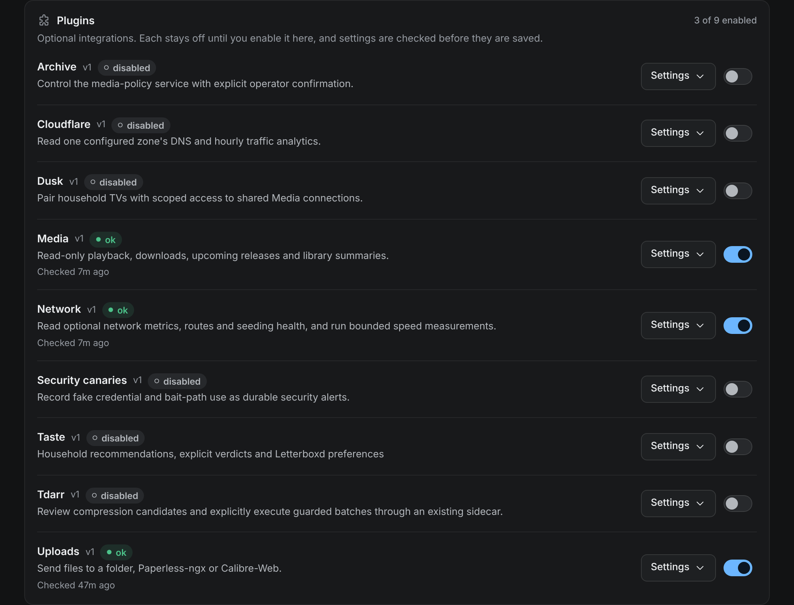
Run the installer.
curl -fsSL https://github.com/ficaa1/homelab-inventory/releases/latest/download/get.sh | shOpen the address it prints.
Add each Linux host.
Hosts report every 15 minutes.
The agent runs only these programs, with these arguments. Anything else is refused before a process starts.
docker | version, ps, inspect |
zfs | list, get, version |
zpool | list, status, get, version |
smartctl | health reads |
qm, pct | config, list, status |
pvesh | get |
pve-firewall | status, compile |
pveversion | no arguments |
systemctl | list-units, list-unit-files, list-timers, show, cat |
journalctl | a fixed kernel window |
ss, netstat | -tulpn, -tuln |
nft | list |
iptables-save, uname | fixed arguments |
curl -fsSL https://github.com/ficaa1/homelab-inventory/releases/latest/download/get.sh | sh